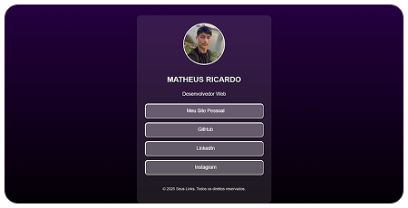

Sobre Mim Desenvolvedor Web
Me chamo Matheus, tenho 17 anos e sou apaixonado em criar interfaces interativas. Iniciante neste mundo, busco cada dia obter novos conhecimentos para melhorar meu desempenho.

.png)
Transformando ideias em experiências digitais que impulsionam resultados

Me chamo Matheus, tenho 17 anos e sou apaixonado em criar interfaces interativas. Iniciante neste mundo, busco cada dia obter novos conhecimentos para melhorar meu desempenho.

Tela de login é um projeto desenvolvido por mim. A tela de login é onde se preenche o nome do usuário e a senha. Nisso o sistema por trás verifica se os dados fornecidos estão no banco de dados.

Portal do Açaí é uma landing page desenvolvida por mim com HTML, CSS e JavaScript serve como um ponto de entrada focado para as suas campanhas de marketing, projetada com um único objetivo em mente

Links Rápidos é um projeto feito com HTML, CSS e JavaScipt onde reúne todos os links de redes sociais. Possui um design responsivo e facilita e navegação do usuário